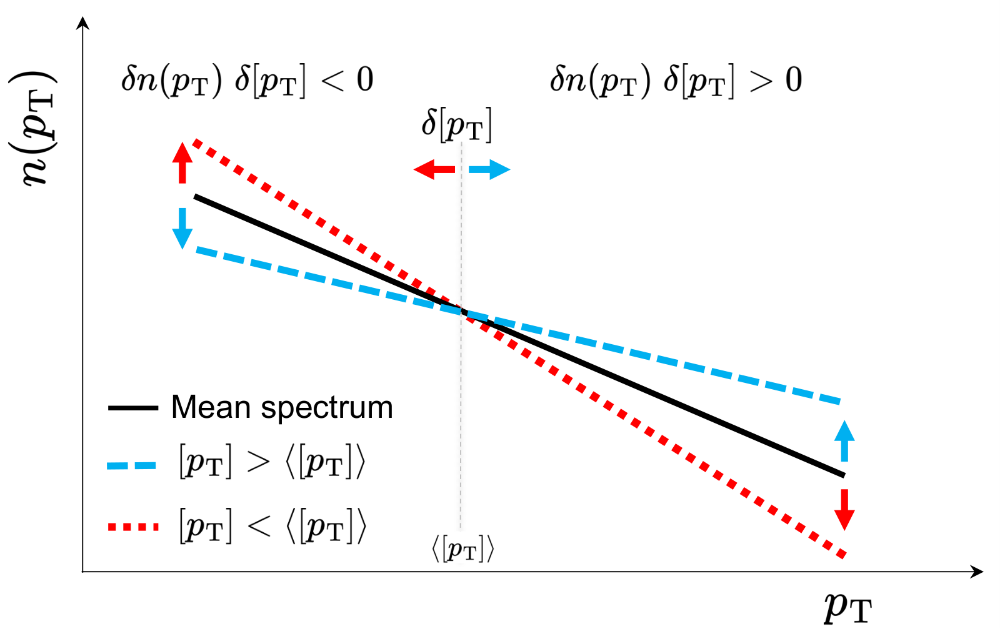
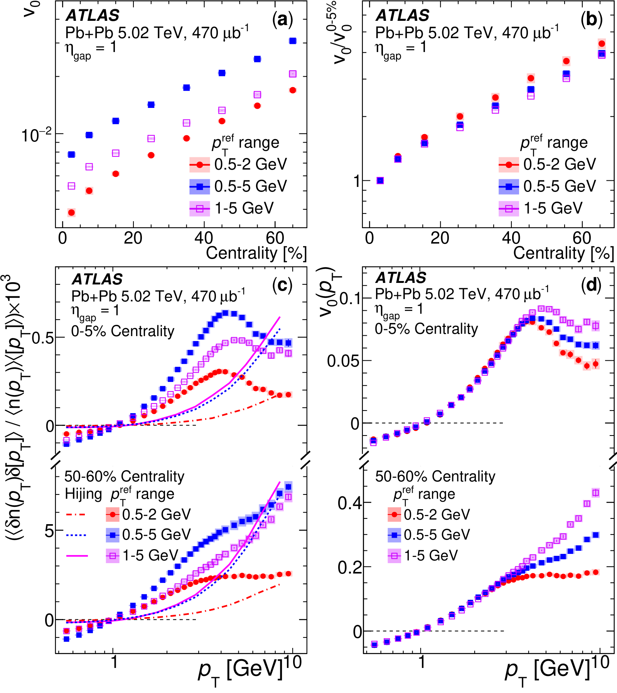
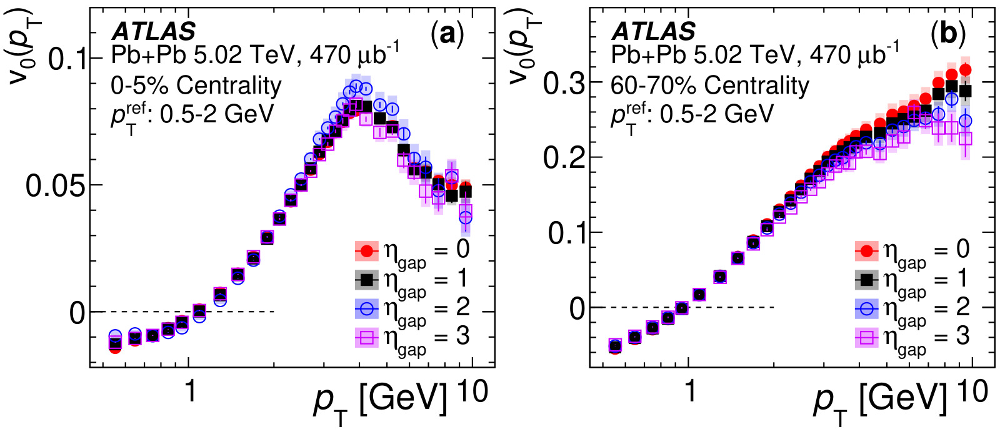
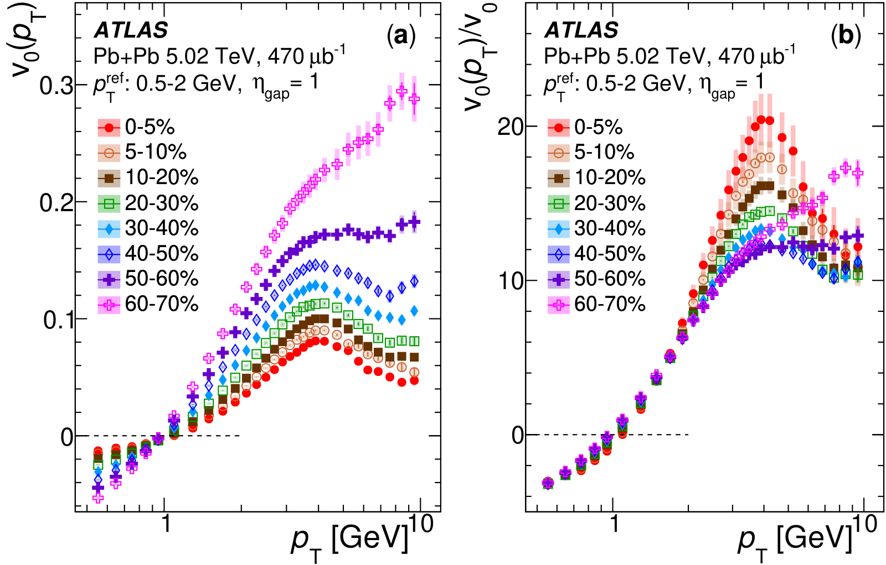
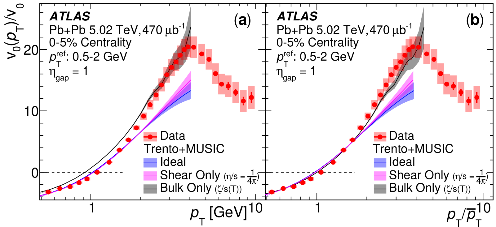

ATLAS measured radial-flow fluctuations as a function of transverse momentum, v₀(pT). The signal persists across pseudorapidity gaps, factorizes at low momentum, and scales across centrality classes.
ATLAS Collaboration · Phys. Rev. Lett. 136, 032301 (2026)
My role: lead analyzer, author of the internal analysis note and of the paper.
The main result in one animation: The three hallmarks of collectivity, tested in turn on v0(pT): long-range in η, factorization in pT, and a centrality-independent shape. Curves are schematic.
1The gap: one kind of flow had never been tested
Pressure in the plasma droplet leaves two fingerprints on the emitted particles: anisotropic flow (vₙ), set by the droplet's shape, and radial flow (v₀), set by its size.
What you're seeing: left, a changing shape makes particles fly out faster along the short axis (anisotropic flow). Right, a changing size makes all particles faster or slower together (radial flow). Only the first had been proven collective.
Open question: is the radial push shared by the whole fluid? Earlier measurements used one number per event, the average momentum, which cannot tell.
2What we measure: how the spectrum tilts, momentum by momentum
A stronger radial push flattens an event's momentum spectrum: fewer slow particles, more fast ones. A weaker push steepens it. The spectrum pivots near the average momentum.
What you're seeing: one event's spectrum (solid) against the average (dashed) as the push swings stronger (red) and weaker (blue). The bottom panel shows the relative change at each momentum. Its pattern is v₀(pT).
We correlate the spectrum in one half of the ATLAS detector with the average momentum [pT] in the other half. Separating the halves suppresses short-range "non-flow" correlations from jets and decays.
What you're seeing: the tracker is split into two halves with a gap in pseudorapidity η. Spectrum shape in one half is correlated with [pT] in the other. Gaps from 0 to 3 were tested.
3What we observe: three hallmarks of collectivity
Three properties establish that anisotropic flow is collective. We tested all three for radial flow.

Fig. 1: stronger-flow events (blue) are flatter than average (black), weaker ones (red) steeper. The correlation is negative below ⟨[pT]⟩ and positive above.
Figure: ATLAS Collaboration, PRL 136, 032301 (2026), arXiv:2503.24125, CC BY 4.0.
Hallmark 1 · It factorizes
With three different reference ranges for [pT], the raw correlations differ, but v₀(pT) is the same below about 3 GeV. The two-particle correlation is a product of single-particle responses. v₀(pT) crosses zero near 1 GeV (≈ ⟨[pT]⟩) and satisfies the predicted sum rule within 4%.

Fig. 2: the raw covariance (c) depends on the reference range, while v₀(pT) (d) does not below about 3 GeV. HIJING, a model without flow (lines), falls well below the data.
Figure: ATLAS Collaboration, PRL 136, 032301 (2026), CC BY 4.0.
Hallmark 2 · It is long-range
Widening the gap between the halves from 0 to 3 barely changes v₀(pT). The effect spans the whole event.

Fig. 3: v₀(pT) for η gaps 0–3 in central (a) and peripheral (b) collisions. The small spread above 3 GeV in peripheral events is consistent with residual jet correlations.
Figure: ATLAS Collaboration, PRL 136, 032301 (2026), CC BY 4.0.
Hallmark 3 · Its shape is universal
What you're seeing (schematic): v₀(pT) is larger in peripheral collisions because their size fluctuates more. Dividing by the integrated v₀ removes this, leaving the fluid's response, the same for all centralities.

Fig. 4: v₀(pT) for eight centralities (a) collapses after dividing by v₀ (b) below about 2.5 GeV. The fall above about 4 GeV may reflect the onset of jet quenching.
Figure: ATLAS Collaboration, PRL 136, 032301 (2026), CC BY 4.0.
4What we conclude: radial flow is collective, and it measures bulk viscosity
Radial flow is collective: it factorizes, is long-range and has a universal shape. A similar ALICE study reports consistent results.
v₀(pT) is especially sensitive to bulk viscosity, the plasma's resistance to uniform expansion and one of its least-constrained properties.
What you're seeing (cartoon): with bulk viscosity (right), the droplet resists uniform expansion and pushes outward less hard. v₀(pT) is sensitive to this difference.

Fig. 5: data (red) vs. hydrodynamics. Ideal and shear-only fluids undershoot above 2 GeV. Adding bulk viscosity (grey) describes the rise much better.
Figure: ATLAS Collaboration, PRL 136, 032301 (2026), CC BY 4.0.
5What comes next
Small systems: O+O, Ne+Ne, p+Pb and pp.
Longitudinal structure: radial flow vs. rapidity, v₀(η).
Jet quenching: v₀(pT) at high pT as a probe of energy-loss fluctuations.
Rare probes: identified hadrons, heavy flavour and quarkonia.
Bulk viscosity: tuned model fits including v₀(pT).
What you're seeing: an oxygen-oxygen collision. Only a few dozen nucleons take part, so the droplet is tiny. v₀(pT) can test whether its radial push is still collective.
Cite this work: ATLAS Collaboration, "Evidence for the collective nature of radial flow in Pb+Pb collisions with the ATLAS detector", Phys. Rev. Lett. 136, 032301 (2026), doi:10.1103/ldcn-r2lq, arXiv:2503.24125.
All plots on this page are reproduced from that paper under CC BY 4.0. Animations are simplified illustrations made for this page, not results of the paper.